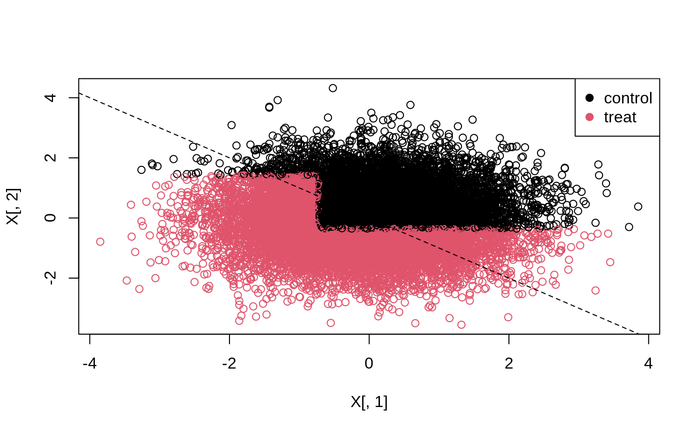

Using suitable estimates of individual treatment effects, Athey and Wager (2021) show that one can estimate policies with favorable statistical properties (low regret). The case where we restrict our candidate policies to be a (shallow) tree, is implemented in the companion package policytree (Sverdrup et. al, 2020).
The example below demonstrates fitting a depth-2 tree on doubly robust treatment effect estimates obtained from a causal forest. The function policy_tree and double_robust_scores belong to the policytree package.
# Fit a causal forest. n <- 15000 p <- 5 X <- round(matrix(rnorm(n * p), n, p), 2) W <- rbinom(n, 1, 1 / (1 + exp(X[, 3]))) tau <- 1 / (1 + exp((X[, 1] + X[, 2]) / 2)) - 0.5 Y <- X[, 3] + W * tau + rnorm(n) c.forest <- causal_forest(X, Y, W) # Compute doubly robust scores. dr.scores <- double_robust_scores(c.forest) head(dr.scores) #> control treated #> [1,] -0.1894867 0.6539203 #> [2,] 0.2069720 2.2627534 #> [3,] -0.4586539 -0.6450377 #> [4,] 0.9696632 -1.2263088 #> [5,] 1.9203896 0.6905221 #> [6,] -3.5035332 -0.2376621 # Fit a depth-2 tree on the doubly robust scores. tree <- policy_tree(X, dr.scores, depth = 2) # Print and plot the tree - action 1 corresponds to control, and 2 treated. print(tree) #> policy_tree object #> Tree depth: 2 #> Actions: 1: control 2: treated #> Variable splits: #> (1) split_variable: X1 split_value: -0.73 #> (2) split_variable: X2 split_value: 1.42 #> (4) * action: 2 #> (5) * action: 1 #> (3) split_variable: X2 split_value: -0.36 #> (6) * action: 2 #> (7) * action: 1 plot(tree)
The 45-degree line in the following plot separates units with a negative effect (above the line), and a positive effect (below the line).
# Predict the treatment assignment {1, 2} for each sample. predicted <- predict(tree, X) plot(X[, 1], X[, 2], col = predicted) legend("topright", c("control", "treat"), col = c(1, 2), pch = 19) abline(0, -1, lty = 2)

Alternatively, predict can return the leaf node each sample falls into, which we can use to calculate statistics for each group (note that for valid inference, statistics like these should all be computed on test set separate from the one used for learning the policy).
node.id <- predict(tree, X, type = "node.id") # The value of all arms (along with SEs) by each leaf node. values <- aggregate(dr.scores, by = list(leaf.node = node.id), FUN = function(x) c(mean = mean(x), se = sd(x) / sqrt(length(x)))) print(values, digits = 2) #> leaf.node control.mean control.se treated.mean treated.se #> 1 4 -0.105 0.034 0.178 0.034 #> 2 5 0.169 0.108 0.044 0.100 #> 3 6 -0.020 0.028 0.071 0.029 #> 4 7 0.019 0.022 -0.159 0.022
For more details (such as the computational aspect of the tree search in policy_tree) please see the policytree package.
Susan Athey and Stefan Wager. Policy Learning With Observational Data. Econometrica, 2021. [arxiv]
Sverdrup, Erik, Ayush Kanodia, Zhengyuan Zhou, Susan Athey, and Stefan Wager. policytree: Policy learning via doubly robust empirical welfare maximization over trees. Journal of Open Source Software 5, no. 50 (2020): 2232. [paper]